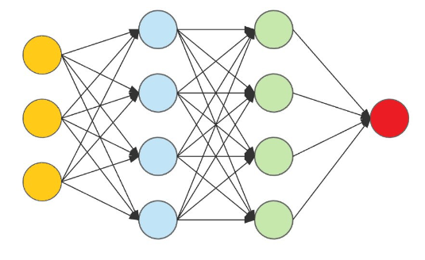

The deep learning revolution started around 2010.
Since then, Deep Learning has solved many "unsolvable" problems.
The deep learning revolution was not started by a single discovery. It more or less happened when several needed factors were ready:
Scientists agree that our brain has between 80 and 100 billion neurons.
These neurons have hundreds of billions connections between them.
Neurons (aka Nerve Cells) are the fundamental units of our brain and nervous system.
The neurons are responsible for receiving input from the external world, for sending output (commands to our muscles), and for transforming the electrical signals in between.
Artificial Neural Networks are normally called Neural Networks (NN).
Neural networks are in fact multi-layer Perceptrons.
The perceptron defines the first step into multi-layered neural networks.
Neural Networks is the essence of Deep Learning.
Neural Networks is one of the most significant discoveries in history.
Neural Networks can solve problems that can NOT be solved by algorithms:
Input data (Yellow) are processed against a hidden layer (Blue) and modified against another hidden layer (Green) to produce the final output (Red).
Tom Michael Mitchell (born 1951) is an American computer scientist and University Professor at the Carnegie Mellon University (CMU).
He is a former Chair of the Machine Learning Department at CMU.
E: Experience (the number of times).
T: The Task (driving a car).
P: The Performance (good or bad).
In 2015, Matthew Lai, a student at Imperial College in London created a neural network calledb Giraffe.
Giraffe could be trained in 72 hours to play chess at the same level as an international master.
Computers playing chess are not new, but the way this program was created was new.
Smart chess playing programs take years to build, while Giraffe was built in 72 hours with a neural network
Classical programming uses programs (algorithms) to create results:
Traditional Computing
Data + Computer Algorithm = Result
Machine Learning uses results to create programs (algorithms):
Machine Learning
Data + Result = Computer Algorithm
Machine Learning is often considered equivalent with Artificial Intelligence.
This is not correct. Machine learning is a subset of Artificial Intelligence.
Machine Learning is a discipline of AI that uses data to teach machines.
The fact that computers can do this millions of times, has proven that computers can take very intelligent decisions.